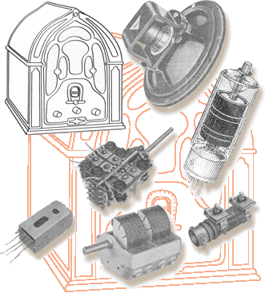

Esquemas (Gratis bajo pedido)
Libros Audio y Electronica (Download directo).
Como Contactar--
Lo que vendo--
Enlaces externos
Ejemplos de algunas restauraciones.
En "Informaciones" están las claves que uso para clasificar los equipos
Otros Datos útiles
YO NECESITO:
SANSUI TA500: T02, Discrimination coil Tuner
Reel-to-Reel X-200D: Rec/PB head, good performing.

Última actualización: 2/7/2026
¿Tienes alguna Sugerencia sobre esta WEB?